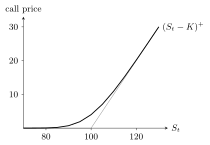

5 The Black–Scholes–Merton model
The Black–Scholes–Merton (BSM) model, published in 1973 by Black and Scholes and by Merton (Nobel prize 1997 to Scholes and Merton), is the most successful stochastic model of a financial market (“imagination creates reality”, Wagner). It is the continuous-time limit of the binomial model, and the same logic applies: replicate the derivative with a self-financing portfolio, and its price follows by no arbitrage. This chapter derives the hedge, the Black–Scholes PDE, its probabilistic solution through the Feynman–Kač formula and the risk-neutral probability, and the explicit formula for calls and puts. It then turns to practice: numerical methods, historical and implied volatility, the Greeks, discrete hedging errors, Delta–Gamma hedging, and the model’s limitations.
5.1 The market
Trading takes place continuously over \([0, T]\). Two assets are traded:
- a bank account with continuously compounded rate \(r > 0\): \(dB_t = rB_t\,dt\), \(B_0 = 1\), so \(B_t = e^{rt}\). It is riskless — no Brownian motion appears;
- a stock (paying no dividends) following a geometric Brownian motion, \[dS_t = \mu S_t\,dt + \sigma S_t\,dW_t, \qquad S_0 = s > 0, \qquad S_t = s\exp\Bigl(\Bigl(\mu - \frac{\sigma^2}{2}\Bigr)t + \sigma W_t\Bigr),\] with drift \(\mu\) (the expected rate of return) and volatility \(\sigma > 0\).
\(S\) is a Markov process and \(S_t\) is log-normal with \(\mathbb E[S_t] = se^{\mu t}\) and \(\mathrm{Var}(S_t) = s^2e^{2\mu t}(e^{\sigma^2t} - 1)\).
5.2 Self-financing strategies
A dynamic portfolio is a pair \(\theta = (\theta^B, \theta^S)\) of adapted processes: \(\theta^B_t\) and \(\theta^S_t\) are the units of bank account and stock held over \([t, t + dt]\). Its value is \(V_t(\theta) = \theta^B_tB_t + \theta^S_tS_t\).
In the multi-period binomial model the self-financing condition \(\theta^B_tB_{t+1} + \theta^S_tS_{t+1} = \theta^B_{t+1}B_{t+1} + \theta^S_{t+1}S_{t+1}\) implies \[\Delta V_{t+1} = V_{t+1} - V_t = \theta^B_t\,\Delta B_{t+1} + \theta^S_t\,\Delta S_{t+1}:\] the value changes only through price changes, never through injections or withdrawals of money. Letting the time step go to zero motivates:
\(\theta\) is self-financing if \[V_t(\theta) = V_0(\theta) + \int_0^t\theta^B_u\,dB_u + \int_0^t\theta^S_u\,dS_u, \qquad\text{i.e.}\qquad dV_t(\theta) = \theta^B_t\,dB_t + \theta^S_t\,dS_t .\]
Substituting the dynamics, \(dV_t = (\theta^B_trB_t + \theta^S_t\mu S_t)\,dt + \theta^S_t\sigma S_t\,dW_t\). The last term is a stochastic integral, so we require \(\mathbb E\int_0^T(\theta^S_tS_t)^2\,dt < \infty\).
An arbitrage is a self-financing \(\theta\) with \(V_0(\theta) = 0\), \(V_T(\theta) \geq 0\) a.s. and \(\mathbb P(V_T(\theta) > 0) > 0\). The BSM model is free of arbitrage for all values of \(r\), \(\mu\), \(\sigma\), provided strategies are restricted to a suitable class (excluding, for instance, “doubling strategies”); this follows from the existence of the risk-neutral probability below.
5.3 Hedging and the Black–Scholes PDE
Consider a European, path-independent derivative with payoff \(G(S_T)\). Since \(S\) is Markov, it is natural to look for its price in the form \(\Pi_t(G) = F(t, S_t)\) for a pricing function \(F : [0, T]\times(0, \infty) \to \mathbb R\): derivatives are priced relative to their underlying.
Let \(F \in C^{1,2}\) satisfy \(F(T, x) = G(x)\). The self-financing portfolio \[\theta^S_t = F_x(t, S_t), \qquad \theta^B_t = \frac{F_t(t, S_t) + \tfrac12\sigma^2S_t^2F_{xx}(t, S_t)}{rB_t},\] started from \(V_0(\theta) = F(0, s)\), has \(dV_t(\theta) = dF(t, S_t)\); hence \(V_T(\theta) = G(S_T)\) almost surely.
Derivation. For a self-financing \(\theta\), \[dV_t = (\theta^B_trB_t + \theta^S_t\mu S_t)\,dt + \theta^S_t\sigma S_t\,dW_t. \tag{1}\] By Itô’s formula, \[dF(t, S_t) = \Bigl(F_t + \mu S_tF_x + \tfrac12\sigma^2S_t^2F_{xx}\Bigr)dt + \sigma S_tF_x\,dW_t. \tag{2}\] Matching the \(dW_t\) terms of (1) and (2) gives \(\theta^S_t = F_x(t, S_t)\). Matching the \(dt\) terms with this choice, the \(\mu\)-terms cancel and \(\theta^B_trB_t = F_t + \tfrac12\sigma^2S_t^2F_{xx}\). If \(dV_t = dF(t, S_t)\) and \(V_0 = F(0, s)\), then \(V_T = F(T, S_T) = G(S_T)\). \(\square\)
\(\theta^S_t = F_x(t, S_t)\) is the Delta of the derivative: exactly as in the binomial model, holding \(\Delta\) shares offsets a short position in the derivative.
By the law of one price, \(F(t, S_t) = V_t(\theta) = \theta^B_tB_t + \theta^S_tS_t\). Substituting the hedge, \[F(t, S_t) = \frac{F_t + \tfrac12\sigma^2S_t^2F_{xx}}{r} + F_xS_t,\] which must hold with probability one, i.e. for every possible value of \(S_t\) — every \(x \in (0, \infty)\).
Under no arbitrage, the pricing function of the derivative with payoff \(G(S_T)\) solves \[F_t(t, x) + rxF_x(t, x) + \frac12\sigma^2x^2F_{xx}(t, x) - rF(t, x) = 0, \qquad (t, x) \in [0, T)\times(0, \infty),\] \[F(T, x) = G(x), \qquad x \in (0, \infty).\]
The pricing problem has become a deterministic one: randomness has disappeared. Some PDEs can be solved explicitly; otherwise numerical schemes apply.
The drift \(\mu\) does not appear in the PDE. The arbitrage-free price does not depend on the expected return of the stock — the continuous-time analogue of the irrelevance of \(p_u, p_d\) in the binomial model. Hence the price would be the same if \(\mu\) were replaced by \(r\), i.e. in a world where investors are risk-neutral, where prices are discounted expectations. This is risk-neutral valuation.
5.4 The Feynman–Kač formula and the risk-neutral probability
Let \(F \in C^{1,2}\) solve the Black–Scholes PDE with terminal condition \(G\). Under suitable integrability conditions, \[F(t, S_t) = e^{-r(T-t)}\,\mathbb E^Q\bigl[G(S_T)\bigm|S_t\bigr],\] where \(Q\) is a probability under which \[dS_t = rS_t\,dt + \sigma S_t\,dW^Q_t\] with \(W^Q\) a \(Q\)-Brownian motion. In particular, the price today is \(F(0, s) = e^{-rT}\mathbb E^Q[G(S_T)]\).
Proof. Under \(Q\), consider \(Y_t = e^{-rt}F(t, S_t) = f(t, S_t)\) with \(f(t, x) = e^{-rt}F(t, x)\). By Itô’s formula, with \(f_t = -re^{-rt}F + e^{-rt}F_t\), \(f_x = e^{-rt}F_x\), \(f_{xx} = e^{-rt}F_{xx}\), \[dY_t = e^{-rt}\Bigl(F_t + rS_tF_x + \tfrac12\sigma^2S_t^2F_{xx} - rF\Bigr)dt + e^{-rt}\sigma S_tF_x\,dW^Q_t = e^{-rt}\sigma S_tF_x(t, S_t)\,dW^Q_t,\] since \(F\) solves the PDE. So \(Y_t = Y_0 + \int_0^te^{-ru}\sigma S_uF_x(u, S_u)\,dW^Q_u\); if \(\mathbb E^Q\int_0^Te^{-2ru}(\sigma S_uF_x)^2du < \infty\), the stochastic integral is a \(Q\)-martingale and \[e^{-rt}F(t, S_t) = Y_t = \mathbb E^Q[Y_T\mid\mathcal F_t] = e^{-rT}\mathbb E^Q[G(S_T)\mid\mathcal F_t],\] using the terminal condition \(F(T, S_T) = G(S_T)\). By the Markov property, conditioning on \(\mathcal F_t\) is the same as conditioning on \(S_t\). \(\square\)
This is the risk-neutral valuation formula of the BSM model. The model is formulated under the real-world (statistical) probability \(\mathbb P\), where \(dS_t = \mu S_t\,dt + \sigma S_t\,dW_t\); under the risk-neutral probability \(Q\), \(dS_t = rS_t\,dt + \sigma S_t\,dW^Q_t\). Equating the two, \[dW^Q_t = dW_t + \frac{\mu - r}{\sigma}\,dt .\] The quantity \(\lambda = \frac{\mu - r}{\sigma}\) is the market price of risk (analogous to the Sharpe ratio): passing from \(\mathbb P\) to \(Q\), the risk premium of the stock is absorbed into the Brownian motion. Girsanov’s theorem makes this rigorous: there is a probability \(Q\) equivalent to \(\mathbb P\) under which \(W_t + \lambda t\) is a Brownian motion. Under \(Q\) the discounted stock price \(e^{-rt}S_t\) is a martingale, and so is every discounted self-financing portfolio — the continuous-time version of the binomial martingale property and the source of absence of arbitrage.
5.5 The Black–Scholes formula
The price of a European call with strike \(K\) and maturity \(T\) is \[\Pi^{\mathrm{Call}}_t(K, T) = S_t\,\Phi(d_1) - Ke^{-r(T-t)}\,\Phi(d_2),\] \[d_1 = \frac{\log(S_t/K) + \bigl(r + \tfrac{\sigma^2}{2}\bigr)(T - t)}{\sigma\sqrt{T - t}}, \qquad d_2 = d_1 - \sigma\sqrt{T - t},\] where \(\Phi\) is the standard normal distribution function.
Proof. Under \(Q\), \(S_T = S_t\exp\bigl((r - \tfrac{\sigma^2}{2})(T - t) + \sigma(W^Q_T - W^Q_t)\bigr)\) and \(Z = (W^Q_T - W^Q_t)/\sqrt{T - t} \sim \mathcal N(0, 1)\) is independent of \(\mathcal F_t\). Split \[e^{-r(T-t)}\mathbb E^Q[(S_T - K)^+\mid S_t] = e^{-r(T-t)}\underbrace{\mathbb E^Q[S_T\mathbf 1_{\{S_T > K\}}\mid S_t]}_{B} - Ke^{-r(T-t)}\underbrace{\mathbb E^Q[\mathbf 1_{\{S_T > K\}}\mid S_t]}_{A}.\]
(A) \(S_T > K\) iff \(\log S_t + (r - \tfrac{\sigma^2}2)(T - t) + \sigma\sqrt{T - t}\,Z > \log K\), iff \(Z > -d_2\). Hence \(A = Q(Z > -d_2) = \Phi(d_2)\) by symmetry.
(B) With the same event, \[B = S_te^{r(T-t)}\int_{-d_2}^{\infty}e^{-\frac{\sigma^2}{2}(T-t) + \sigma\sqrt{T-t}\,z}\,\frac{e^{-z^2/2}}{\sqrt{2\pi}}\,dz = S_te^{r(T-t)}\int_{-d_2}^{\infty}\frac{e^{-(z - \sigma\sqrt{T-t})^2/2}}{\sqrt{2\pi}}\,dz,\] by completing the square. Substituting \(y = z - \sigma\sqrt{T - t}\), the integral is \(Q(Z > -d_2 - \sigma\sqrt{T - t}) = \Phi(d_2 + \sigma\sqrt{T - t}) = \Phi(d_1)\). Putting the pieces together gives the formula. \(\square\)
Interpretation. \(\Phi(d_2) = Q(S_T > K)\) is the risk-neutral probability that the call is exercised; \(S_t\Phi(d_1)\) is the value at \(t\) of receiving one unit of the underlying at \(T\) on the event \(\{S_T > K\}\).
\[\Pi^{\mathrm{Put}}_t(K, T) = Ke^{-r(T-t)}\Phi(-d_2) - S_t\Phi(-d_1).\]
Proof. By put–call parity, \(\Pi^{\mathrm{Put}}_t = \Pi^{\mathrm{Call}}_t - S_t + Ke^{-r(T-t)} = Ke^{-r(T-t)}(1 - \Phi(d_2)) - S_t(1 - \Phi(d_1))\), and \(1 - \Phi(x) = \Phi(-x)\). \(\square\)

Figure: Black–Scholes call price (bold) as a function of the spot, with \(K = 100\), \(\sigma = 0.2\), \(r = 0\), \(T - t = 0.25\); grey: intrinsic value.
Moneyness. At time \(t\) a call is in the money if \(S_t > K\), out of the money if \(S_t < K\), at the money if \(S_t = K\).
The BS call price is
- decreasing and convex in \(K\) (clear from \(e^{-r(T-t)}\mathbb E^Q[(S_T - K)^+]\));
- increasing and convex in \(S_t\);
- increasing in \(r\) (under \(Q\), \(r\) is the growth rate of the underlying and the discount rate of the strike);
- increasing in \(\sigma\) (an option is a right: more dispersion raises the upside, while the downside is capped);
- increasing in the maturity \(T\) (same intuition as volatility).
5.6 Extensions: dividends and other European claims
Continuous dividend yield. If the stock pays dividends continuously at rate \(q\) (a good model for an index), the self-financing condition includes the dividends received, and under \(Q\) the total return — price change plus dividends — is \(r\): \[dS_t = (r - q)S_t\,dt + \sigma S_t\,dW^Q_t .\] Repeating the computation of the Black–Scholes formula with \(\mathbb E^Q[S_T] = S_te^{(r-q)\tau}\), \(\tau = T - t\), gives Merton’s formula \[\Pi^{\mathrm{Call}}_t = S_te^{-q\tau}\Phi(d_1) - Ke^{-r\tau}\Phi(d_2), \qquad d_{1,2} = \frac{\log(S_t/K) + (r - q \pm \tfrac12\sigma^2)\tau}{\sigma\sqrt\tau},\] i.e. Black–Scholes with \(S_t\) replaced by \(S_te^{-q\tau}\). Special cases: a currency (\(q = r_f\), the Garman–Kohlhagen formula of Chapter 10) and a futures price (\(q = r\), Black’s formula \(e^{-r\tau}[F\Phi(d_1) - K\Phi(d_2)]\), used for interest-rate options in Chapter 8). With discrete dividends of known present value \(D\), a standard approximation replaces \(S_t\) by \(S_t - D\).
Other path-independent claims. For a payoff \(\Phi(S_T)\) the price is \(e^{-r\tau}\mathbb E^Q[\Phi(S_T)]\) with \(\log S_T \sim \mathcal N(\log S_t + (r - \sigma^2/2)\tau, \sigma^2\tau)\). Useful building blocks:
| claim | payoff | price at \(t\) |
|---|---|---|
| cash-or-nothing (digital) call | \(\mathbf 1_{\{S_T > K\}}\) | \(e^{-r\tau}\Phi(d_2)\) |
| asset-or-nothing call | \(S_T\mathbf 1_{\{S_T > K\}}\) | \(S_t\Phi(d_1)\) |
| power claim | \(S_T^\beta\) | \(S_t^\beta\exp\bigl((\beta - 1)(r + \tfrac12\beta\sigma^2)\tau\bigr)\) |
| log contract | \(\log S_T\) | \(e^{-r\tau}\bigl(\log S_t + (r - \tfrac12\sigma^2)\tau\bigr)\) |
A call is an asset-or-nothing call minus \(K\) digital calls — which is the Black–Scholes formula. Any payoff can be decomposed this way: binary options, capped payoffs, and (Chapter 7) log contracts underlie variance swaps.
5.7 Numerical methods
For standard payoffs the price is explicit; more complex products, or standard products in more complex models, need numerical methods:
- Numerical integration. If the risk-neutral law of \(S_T\) is known — in BSM, \(\log S_T\mid S_t \sim \mathcal N\bigl(\log S_t + (r - \tfrac{\sigma^2}2)(T - t), \sigma^2(T - t)\bigr)\) — then \(\Pi_t(G) = e^{-r(T-t)}\int_{-\infty}^{\infty}G(e^x)\varphi(x)\,dx\) with \(\varphi\) that Gaussian density, a one-dimensional integral. The law is explicit only in some models.
- Trees. Approximate the SDE by a binomial tree (Chapter 3); hard with several stochastic factors.
- PDE methods. Finite-difference schemes for the pricing PDE; complexity grows quickly with the number of factors (machine-learning methods are promising here).
- Monte Carlo. Simulate many paths of the underlying under \(Q\) and average discounted payoffs; universal and simple, requires no knowledge of the law of \(S_T\) (Chapter 6).
5.8 Historical and implied volatility
The volatility \(\sigma\) is the crucial — and unobservable — parameter.
Historical volatility estimates \(\sigma\) from a time series of log-returns \(Z_i = \log(S_{t_i}/S_{t_{i-1}})\) with \(t_i - t_{i-1} = \Delta\): \[\hat\sigma = \frac{1}{\sqrt\Delta}\Bigl(\frac{1}{n-1}\sum_{i=1}^n(Z_i - \bar Z)^2\Bigr)^{1/2}.\]
Implied volatility is calibrated from option prices: if a call trades at \(\Pi^{\mathrm{Call}}_{\mathrm{mkt}}(K, T)\), its implied volatility \(\sigma_{\mathrm{imp}}\) solves \[\Pi^{\mathrm{Call}}_{\mathrm{mkt}}(K, T) = \Pi^{\mathrm{Call}}_{BS}(K, T; \sigma_{\mathrm{imp}}).\] Since the BS price is strictly increasing in \(\sigma\), the solution is unique (found by Newton’s method or bisection). In the BSM model \(\sigma_{\mathrm{imp}}\) would be the same for all strikes and maturities. In reality it is not: the implied-volatility surface \((K, T) \mapsto \sigma_{\mathrm{imp}}(K, T)\) shows a skew (higher implied volatility for low strikes, especially on equity indices such as the SPX) and a term structure. As the saying goes, implied volatility is “the wrong number to put in the wrong formula to get the right price”. Chapter 7 develops models that fit the surface.
5.9 The Greeks
The Greeks measure the sensitivity of a price \(F(t, S_t)\) to the underlying and to the parameters; they are the basic tools of risk management for derivative portfolios. Since differentiation is linear, the Greek of a portfolio is the sum of the Greeks of its components.
| Greek | definition | European call (BS) | European put (BS) |
|---|---|---|---|
| Delta | \(\Delta = \partial F/\partial S\) | \(\Phi(d_1) \in [0, 1]\) | \(-\Phi(-d_1) \in [-1, 0]\) |
| Gamma | \(\Gamma = \partial^2F/\partial S^2\) | \(\dfrac{\varphi(d_1)}{S\sigma\sqrt{T-t}}\) | same as call |
| Vega | \(\mathcal V = \partial F/\partial\sigma\) | \(S\varphi(d_1)\sqrt{T-t}\) | same as call |
| Theta | \(\Theta = \partial F/\partial t\) | \(-\dfrac{S\varphi(d_1)\sigma}{2\sqrt{T-t}} - rKe^{-r(T-t)}\Phi(d_2)\) | \(-\dfrac{S\varphi(d_1)\sigma}{2\sqrt{T-t}} + rKe^{-r(T-t)}\Phi(-d_2)\) |
| Rho | \(\rho = \partial F/\partial r\) | \(K(T-t)e^{-r(T-t)}\Phi(d_2)\) | \(-K(T-t)e^{-r(T-t)}\Phi(-d_2)\) |
Here \(\varphi\) is the standard normal density, \(\varphi(x) = e^{-x^2/2}/\sqrt{2\pi}\). One unit of the underlying has \(\Delta = 1\) and \(\Gamma = 0\). The derivation of Delta uses the identity \(S\varphi(d_1) = Ke^{-r(T-t)}\varphi(d_2)\), which makes the terms coming from \(\partial d_1/\partial S\) and \(\partial d_2/\partial S\) cancel. The Black–Scholes PDE itself reads \(\Theta + rS\Delta + \tfrac12\sigma^2S^2\Gamma = rF\).
5.10 Hedging in practice
In theory, holding \(\Delta_t\) shares and rebalancing continuously replicates the derivative perfectly: \[dV_t = (V_t - \Delta_tS_t)\,r\,dt + \Delta_t\,dS_t = dF(t, S_t).\] In practice continuous rebalancing is impossible (transaction costs); the portfolio is rebalanced at discrete dates, every \(\Delta\) units of time (say, daily). Over one step, \[V_{t+\Delta} - V_t \approx (V_t - \Delta_tS_t)r\Delta + \Delta_t(S_{t+\Delta} - S_t),\] while by Taylor’s expansion, keeping the second-order (Itô) term, \[F(t + \Delta, S_{t+\Delta}) - F(t, S_t) \approx \Theta_t\Delta + \Delta_t(S_{t+\Delta} - S_t) + \frac{\Gamma_t}{2}(S_{t+\Delta} - S_t)^2 .\] The Delta terms cancel, and the hedging error over one step is \[\bigl(V_{t+\Delta} - F(t + \Delta, S_{t+\Delta})\bigr) - \bigl(V_t - F(t, S_t)\bigr) \approx \bigl(V_t - F(t, S_t)\bigr)r\Delta + \frac{\Gamma_t}{2}\Bigl(\sigma^2S_t^2\Delta - (S_{t+\Delta} - S_t)^2\Bigr),\] where we used \(rF - \Delta_trS_t - \Theta_t = \tfrac12\sigma^2S_t^2\Gamma_t\) (the BS PDE). The first term propagates the error already accumulated. The second compares the variance the model expects over \(\Delta\) with the realised squared move: it has approximately zero mean and vanishes as \(\Delta \to 0\) (continuous-time perfect hedging), but over finite steps it is a source of P&L, proportional to Gamma. Simulations of a Delta-hedged call show final P&Ls of a few cents with frequent rebalancing, and larger ones (tens of cents) with daily or static hedging.
To reduce the error one wants \(\Gamma = 0\) as well, which requires a second traded derivative, since the underlying has zero Gamma.
To hedge a short position in a derivative \(F\) (with \(\Delta^F\), \(\Gamma^F\)) using the underlying and a traded derivative \(G\) on the same underlying (with \(\Delta^G\), \(\Gamma^G\)), choose \(\pi^S\) units of the underlying and \(\pi^G\) units of \(G\) such that \[\Delta^F = \pi^S + \pi^G\Delta^G, \qquad \Gamma^F = \pi^G\Gamma^G .\]
The solution is found in this order: first \(\pi^G = \Gamma^F/\Gamma^G\) (Gamma neutrality uses only \(G\)), then \(\pi^S = \Delta^F - \pi^G\Delta^G\). Making the position Delta-neutral first and then adding \(G\) would destroy Delta neutrality. In practice the procedure is applied at the level of whole portfolios of derivatives.
5.11 Criticisms of the model
Despite its success, the BSM model is contradicted by data in several ways:
- log-returns are not normal: they are skewed and fat-tailed;
- large moves over short periods (jumps, crashes) are far more frequent than the model allows;
- volatility is not constant: it clusters (heteroskedasticity) and is negatively correlated with returns;
- markets are not complete: not every payoff can be perfectly hedged.
These shortcomings motivate local and stochastic volatility models (Chapter 7), jump and Lévy models, and beyond. As Carlo Rovelli put it, between absolute certainty and total uncertainty there is a precious intermediate space — and that is where models live.
5.12 Exercises
Problems from Hull (H), Chapters 15 and 19, and Björk (B), Chapters 7 and 9.
(H 15.3, 15.4) Price a 3-month European put with \(S = K = 50\), \(r = 10\%\), \(\sigma = 30\%\). How does the price change if a dividend of \(1.50\) is expected in 2 months?
Solution. \(d_1 = \frac{(0.1 + 0.045)\times0.25}{0.3\times0.5} = 0.2417\), \(d_2 = 0.0917\); \(p = 50e^{-0.025}\Phi(-0.0917) - 50\Phi(-0.2417) = 2.38\). With the dividend, replace \(S\) by \(50 - 1.5e^{-0.1\times2/12} = 48.52\): the put rises to \(3.03\), since the dividend lowers the expected stock price.
(H 15.6) A stock follows GBM with \(\mu = 16\%\), \(\sigma = 35\%\), \(S_0 = 38\). What is the (real-world) probability that a 6-month European call with \(K = 40\) is exercised? And the put?
Solution. \(\mathbb P(S_T > K) = \Phi\bigl(\frac{\log(38/40) + (0.16 - 0.35^2/2)\times0.5}{0.35\sqrt{0.5}}\bigr) = \Phi(-0.0077) = 0.497\); the put is exercised with probability \(0.503\). These use \(\mu\); risk-neutral probabilities would use \(r\) instead.
(H 15.14) A 3-month call with \(K = 13\) on a stock at \(15\) costs \(2.50\); \(r = 5\%\). Find the implied volatility.
Solution. Solving \(C_{BS}(\sigma) = 2.50\) (e.g. by bisection, the price being increasing in \(\sigma\)) gives \(\sigma_{\mathrm{imp}} \approx 39.6\%\).
(B 7.2, H 15.9) In the Black–Scholes model, find the price of the “golden logarithm”, which pays \(\log S_T\) at \(T\), and verify that it solves the Black–Scholes PDE.
Solution. \(F(t, s) = e^{-r\tau}\mathbb E^Q[\log S_T] = e^{-r\tau}\bigl(\log s + (r - \tfrac12\sigma^2)\tau\bigr)\), \(\tau = T - t\). Then \(F_t = rF - e^{-r\tau}(r - \tfrac12\sigma^2)\), \(sF_s = e^{-r\tau}\), \(s^2F_{ss} = -e^{-r\tau}\), and \(F_t + rsF_s + \tfrac12\sigma^2s^2F_{ss} - rF = e^{-r\tau}\bigl[-(r - \tfrac12\sigma^2) + r - \tfrac12\sigma^2\bigr] = 0\). ✓
(B 7.4, H 15.10) Price the claim \(S_T^\beta\) and show that its price has the form \(h(t, T)S_t^\beta\).
Solution. Under \(Q\), \(S_T^\beta = S_t^\beta\exp\bigl(\beta(r - \tfrac12\sigma^2)\tau + \beta\sigma(W^Q_T - W^Q_t)\bigr)\), so \(\mathbb E^Q[S_T^\beta\mid S_t] = S_t^\beta e^{\beta(r - \sigma^2/2)\tau + \beta^2\sigma^2\tau/2}\) and the price is \(S_t^\beta\exp\bigl((\beta - 1)(r + \tfrac12\beta\sigma^2)\tau\bigr)\). Checks: \(\beta = 1\) gives \(S_t\); \(\beta = 0\) gives the bond \(e^{-r\tau}\).
(B 7.5, H 15.20) Price a binary option paying \(K\) if \(S_T \in [\alpha, \beta]\) and nothing otherwise. In particular, what is a claim paying \(100\) if \(S_T > K\) worth?
Solution. \(Ke^{-r\tau}Q(\alpha \leq S_T \leq \beta) = Ke^{-r\tau}\bigl[\Phi(d_2(\alpha)) - \Phi(d_2(\beta))\bigr]\), where \(d_2(x) = \frac{\log(S_t/x) + (r - \sigma^2/2)\tau}{\sigma\sqrt\tau}\). The digital paying \(100\) above \(K\) is worth \(100e^{-r\tau}\Phi(d_2)\): \(\Phi(d_2)\) is the risk-neutral exercise probability.
(H 15.21) A perpetual American put with strike \(K\) is exercised when the stock first hits \(H < K\). Using that \(S^{-\gamma}\) with \(\gamma = 2r/\sigma^2\) solves the time-independent Black–Scholes equation, find its value for \(S > H\), the optimal \(H\), and the option value.
Solution. For a perpetual claim \(F = F(S)\), the PDE is \(rSF' + \tfrac12\sigma^2S^2F'' - rF = 0\), with solutions \(S\) and \(S^{-\gamma}\). A bounded solution equal to \(K - H\) at \(S = H\) is \(V(S) = (K - H)(S/H)^{-\gamma}\). Maximising over \(H\), \(\frac{d}{dH}\bigl[(K - H)H^\gamma\bigr] = 0\) gives \(H^* = \frac{\gamma K}{1 + \gamma}\). Hence \(V(S) = \frac{K}{1 + \gamma}\bigl(\frac{S}{H^*}\bigr)^{-\gamma}\) for \(S > H^*\), and \(V = K - S\) below.
(H 19.2) Compute the Delta of an at-the-money 6-month European call when \(r = 10\%\) and \(\sigma = 25\%\).
Solution. \(d_1 = \frac{(0.1 + 0.03125)\times0.5}{0.25\sqrt{0.5}} = 0.3712\), so \(\Delta = \Phi(0.3712) = 0.645\).
(B 9.5, 9.6) A portfolio has \(\Delta_P = 2\), \(\Gamma_P = 3\). (a) Make it Delta- and Gamma-neutral with two derivatives \(F\) (\(\Delta_F = -1\), \(\Gamma_F = 2\)) and \(G\) (\(\Delta_G = 5\), \(\Gamma_G = -2\)). (b) Do the same using \(F\) and the underlying.
Solution.
- Holdings \(x\) of \(F\), \(y\) of \(G\): \(2 - x + 5y = 0\), \(3 + 2x - 2y = 0\), giving \(x = -2.375\), \(y = -0.875\) (sell both). (b) Gamma first: \(3 + 2x = 0\), \(x = -1.5\); then Delta: \(2 + 1.5 + y = 0\), \(y = -3.5\) units of the underlying.
(B 9.8, 9.9) Show that for any self-financing portfolio of derivatives on the same underlying, \(\Theta_P + rS\Delta_P + \tfrac12\sigma^2S^2\Gamma_P = rP\), and deduce that a Delta- and Gamma-neutral portfolio earns the risk-free rate.
Solution. Each derivative’s pricing function solves the Black–Scholes PDE, which is linear, so the portfolio value \(P\) solves it too: this is the identity. If \(\Delta_P = \Gamma_P = 0\), it reduces to \(\Theta_P = rP\): the value changes only deterministically, at rate \(r\) — the portfolio replicates the bank account.
5.13 Sources
Prof. Fontana, Stochastic Finance slides, Chapter 5 (slides_5), and the handwritten lecture notes of 19 November 2025 (self-financing strategies in continuous time, hedging, Black–Scholes PDE, Feynman–Kač, change of drift and market price of risk, derivation of the Black–Scholes formula, numerical integration, discrete Delta hedging error). Björk, Arbitrage Theory in Continuous Time, Chapter 7, Sections 8.1–8.2 and Chapter 10; Hull, Options, Futures, and Other Derivatives, Chapters 15 and 19; Shreve, Stochastic Calculus for Finance II, Section 4.5; Turner and Zeindler, Stochastic Finance, Chapter 9. Original references: F. Black and M. Scholes, J. Polit. Econ. 81, 637 (1973); R. Merton, Bell J. Econ. 4, 141 (1973).